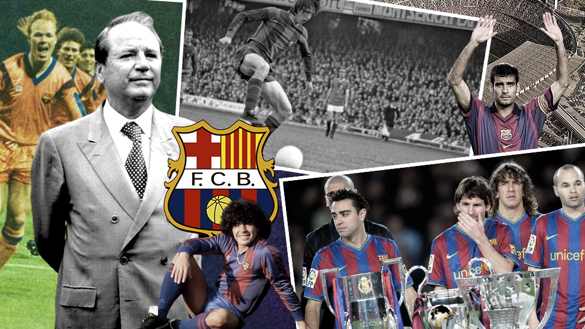
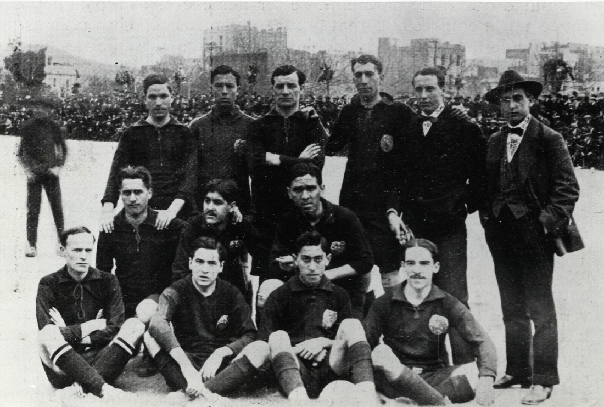
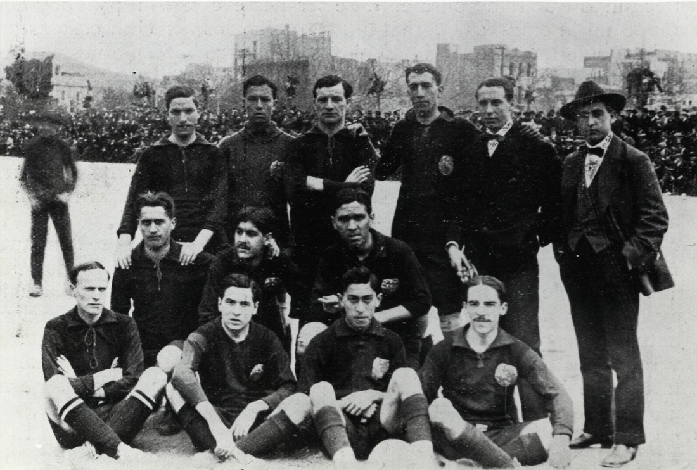
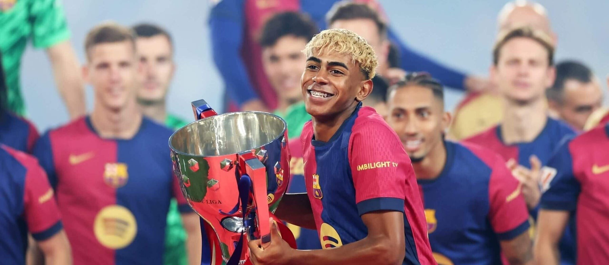
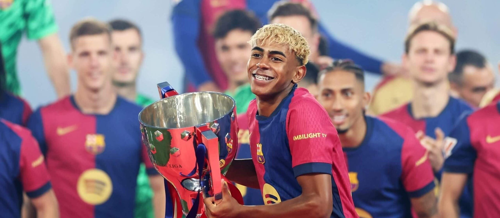

Historia del FC Barcelona
Aquí encontrarás un recorrido completo por los inicios del FC Barcelona, las épocas más gloriosas que marcaron la historia del club y su situación actual. A lo largo de esta sección podrás descubrir cómo un pequeño equipo fundado en 1899 por Joan Gamper se transformó en una de las instituciones deportivas más reconocidas y admiradas en todo el mundo. Cada una de las épocas mencionadas refleja no solo títulos y grandes gestas deportivas, sino también momentos de identidad, pasión y cultura catalana que hicieron del Barça un símbolo más allá del fútbol. Además, podrás revivir con fotos de los instantes más memorables: desde los primeros campeonatos, pasando por el legendario Dream Team de Johan Cruyff, hasta la era dorada de Pep Guardiola y el triplete históricos.
Primeros años (1899 - 1930s)
Fundado en el 29 de noviembre de 1899 por Hans Gamper, el FC Barcelona nació como un club formado por jugadores locales y extranjeros que compartían la pasión por el fútbol. En sus primeros años el club participó en torneos regionales y amistosos que sirvieron para consolidar su identidad y su hinchada. A lo largo de las primeras décadas, el Barcelona fue construyendo una cultura propia basada en la cercanía con la ciudad, la cantera y la búsqueda de un juego vistoso que le ganaría reconocimiento fuera de España.
Fotos - Primeros años
 

Mejores años
A lo largo de su historia el club ha tenido varias épocas doradas. Desde la consolidación como fuerza nacional en las décadas centrales del siglo XX, hasta la revolución táctica y deportiva impulsada por Johan Cruyff en los años 90. Más adelante, la era de Pep Guardiola (2008-2012) introdujo un estilo de juego basado en la posesión y la presión alta que rindió múltiples títulos nacionales e internacionales. En todas estas etapas, La Masía y la apuesta por el talento joven han sido factores clave en el éxito del club.
Épocas destacadas
- 1899–1929 - Fundación y primeros títulos (1.ª Liga en 1929).
- 1948–1953 - Era de las 5 Copas (Kubala, Ramallets).
- 1973–1978 - Cruyff jugador; Liga 1973–74.
- 1988–1996 - Dream Team de Cruyff; 4 Ligas seguidas y 1.ª Copa de Europa (1992).
- 2003–2008 - Ronaldinho/Rijkaard; Champions 2006.
- 2008–2012 - Pep Guardiola; tiki-taka y sextete 2009 (Champions 2009 y 2011).
- 2014–2017 - MSN con Luis Enrique; triplete 2015.
- 2017–2021 - Últimos años de Messi; ligas y crisis europea.
- 2021–2025 - Reconstrucción; Liga 2022–23 y protagonismo de la cantera.
Fotos - Mejores años

Dream Team (Johan Cruyff, 1992)
El 'Dream Team' de Johan Cruyff (finales de los 80 y principios de los 90) transformó al Barcelona en un referente del fútbol moderno. Con una filosofía inspirada en el 'fútbol total', Cruyff impulsó un modelo de juego colectivo, técnico y ofensivo. El punto culminante llegó en 1992, cuando el equipo ganó su primera Copa de Europa tras vencer a la Sampdoria en Wembley gracias a un cabezazo de Ronald Koeman en la prórroga. Jugadores como Pep Guardiola, Ronald Koeman, Hristo Stoichkov, Michael Laudrup y Txiki Begiristain fueron piezas clave de aquel conjunto histórico, cuyo legado todavía influye en la identidad del club.
Fotos - Dream Team


Barça 2015 - Champions
La temporada 2014-2015 fue otra cumbre en la historia reciente del club. Bajo la dirección de Luis Enrique, el Barcelona formó un tridente ofensivo letal —Messi, Suárez y Neymar (la famosa MSN)— que combinó talento, velocidad y eficacia. Aquella temporada el equipo consiguió el triplete (Liga, Copa del Rey y Champions League), culminando con la victoria por 3-1 frente a la Juventus en la final de Berlín. El éxito de 2015 reafirmó la capacidad del club para combinar cantera, fichajes clave y un estilo de juego atractivo.
Fotos - Barça 2015


Cómo están ahora
En 2025 el FC Barcelona sigue siendo uno de los clubes más seguidos del mundo y mantiene la ambición de competir en lo más alto tanto en La Liga como en Europa. Tras períodos de reconstrucción, el club ha reforzado su apuesta por la cantera —con jugadores surgidos de La Masía— y por la mezcla entre juventud y experiencia. A nivel institucional se trabaja en la estabilidad económica y en proyectos para modernizar instalaciones y conectar aún más con la afición. El objetivo permanente es recuperar y consolidar la competitividad en todas las competiciones.
Datos actuales (2025)
- Competición principal: La Liga y Champions League
- Estadio: Spotify Camp Nou
- Director técnico: Hansi Flick
- Año: 2025
Fotos - Actualidad (2025)
 

Trofeos
Galería histórica